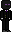
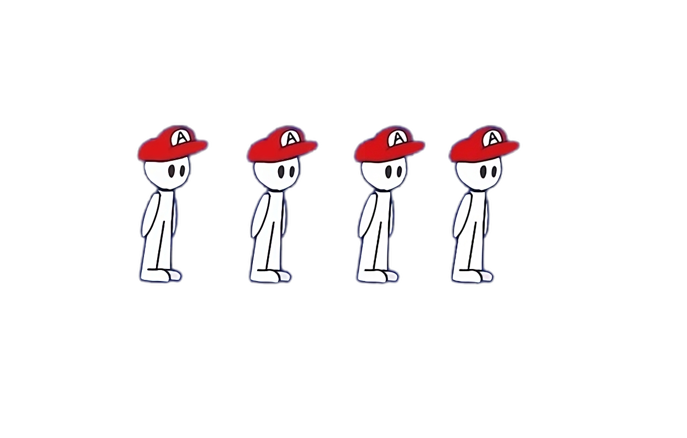
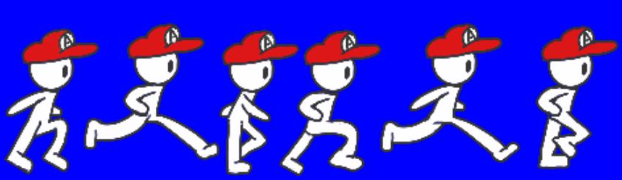
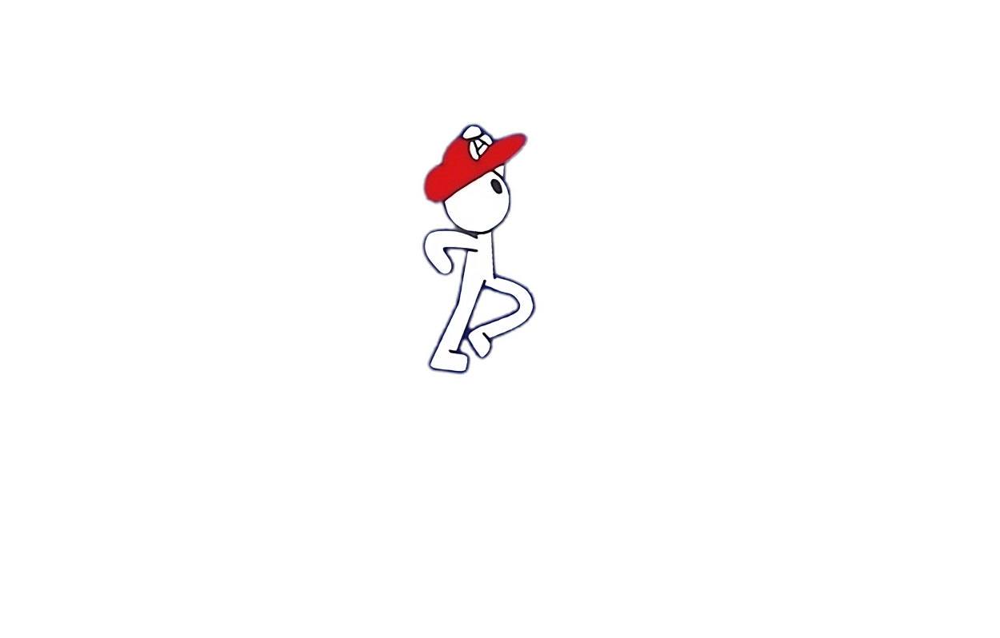
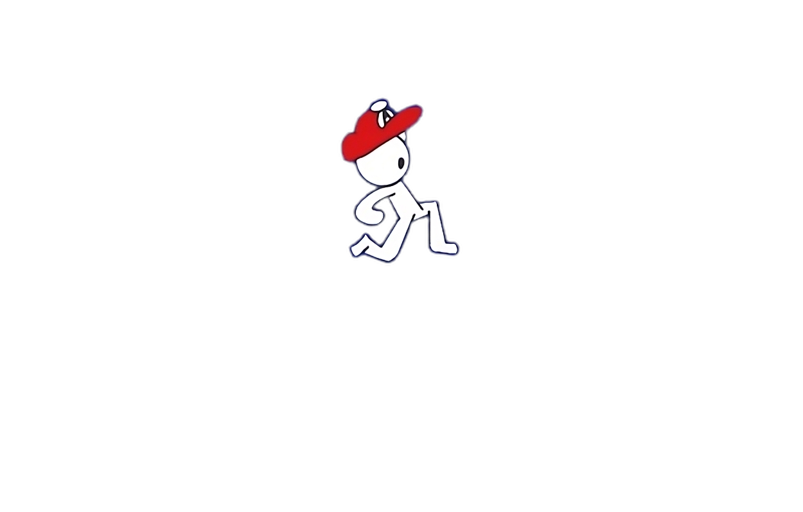

// PLAYER 01
SHIPPED

49
Teleporter
- Teleports to mouse cursor
- 1-second cooldown, SFX + particle burst on use
- Enderman's Breath: purple poison cloud (never built)
A 2D platformer about three bozos.
A Unity side-project with three characters and
incompatible movement. 49 teleports to your cursor;
Slime double-jumps. Swap mid-run with E. Shipped
v0.1 and v0.2, then started v0.3 (third character, first real
map) before we moved on. Repo's still up, the build still runs.
> bozos_adventure --build=v0.2 --final ◉ 49 [ SHIPPED ] ▣ Slime [ SHIPPED ] ? AA [ NEVER FINISHED ] > archived at v0.2. _
Each character was built around one movement gimmick. The switcher existed so the same level could be solved three ways: teleport over a gap, or chain a double-jump across it.

Teleporter
Double-jumper

Hat-thrower
Press E to swap characters mid-run.
All three characters, all the v0.2 mechanics, captured before the project went on the shelf.
Two builds shipped, one that got close. v0.1 was "you can move." v0.2 was the real one: two characters, two movement types, a working switcher. v0.3 was where the scope outran the energy.

EThe board's still there. These were the cards queued behind v0.3. None of them shipped.
Individual poses for AA that lived as PNGs in assets/
but never made it into a state machine. Running cycle, jump, fall,
all sitting in the folder, none of them strung together.



Concept art for the first proper map. Never got built in-engine.

Stuff that was still on the board when we wrapped up. None of it got fixed.
Swapping to 49 mid-cooldown froze the cooldown counter. The fix would've been adding a cooldown to the switcher itself so the two abilities couldn't desync. Never got around to it.
Input timing was too strict. Felt like a frame-perfect cancel half the time. A coyote-time window plus a proper input buffer would've fixed it.
Velocity flipped abruptly on direction changes. The right fix was pushing the input-to-velocity path through Vector3.Lerp (or SmoothDamp). Easy in hindsight.
A title-screen theme. Composed alongside v0.1, the first piece of the project that actually felt like a game.
The repo and the v0.2 build are still public. Clone it, run it, fork it, pick it up where we left off if you want.